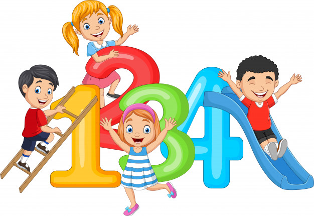

El tema de los números es de suma importancia en el aprendizaje del inglés, ya que se usa al hablar de la información personal: edad, números de teléfono, direcciones etc. También en contextos donde necesites hablar de precios o tallas de ropa como almacenes de ropa, restaurantes, cinemas, etc.

GRUPO 1:
Los números del 0 al 12. Se pronuncian igual en las formas del inglés americano y británico. Observa y escucha el siguiente video e intenta pronunciar los números después de que la persona los menciona.
Zero (0): Cero
One (1): Uno
Two (2): Dos
Three (3): Tres
Four (4): Cuatro
Five (5): Cinco
Six (6): Seis
Seven (7): Siete
Eight (8): Ocho
Nine (9): Nueve
Ten (10): Diez
Eleven (11): Once
Twelve (12): Doce
GRUPO 2:
Los números del 13 del al 19 se escriben con una terminación final –teen, donde la pronunciación del sonido /i/ es más largo que la i en español. Los números del 13 al 19 se pronuncian de la misma manera en las variantes americana y británica. En el siguiente video una maestra te enseñara la correcta pronunciación de los números del 13 al 19.
Thirteen (13): Trece
Fourteen (14): Catorce
Fifteen (15): Quince
Sixteen (16): Dieciséis
Seventeen (17): Diecisiete
Eighteen (18): Dieciocho
Nineteen (19): Diecinueve
GRUPO 3:
Los números del 20, 30, 40, … 90 se escriben con -ty final. escucha el siguiente video e intenta pronunciar los números después de que la persona los menciona.
Twenty (20): Veinte
Thirty (30): Treinta
Forty (40): Cuarenta
Fifty: (50): Cincuenta
Sixty: (60): Sesenta
Seventy (70): Setenta
Eighty (80): Ochenta
Ninety (90) : Noventa
GRUPO 4:
Los números combinados del 21 al 99 se escriben y pronuncian utilizando la decena (20, 30, etc.) y luego un número del 1 al 9. En el siguiente video te explicaremos más a detalle cómo es su pronunciación.